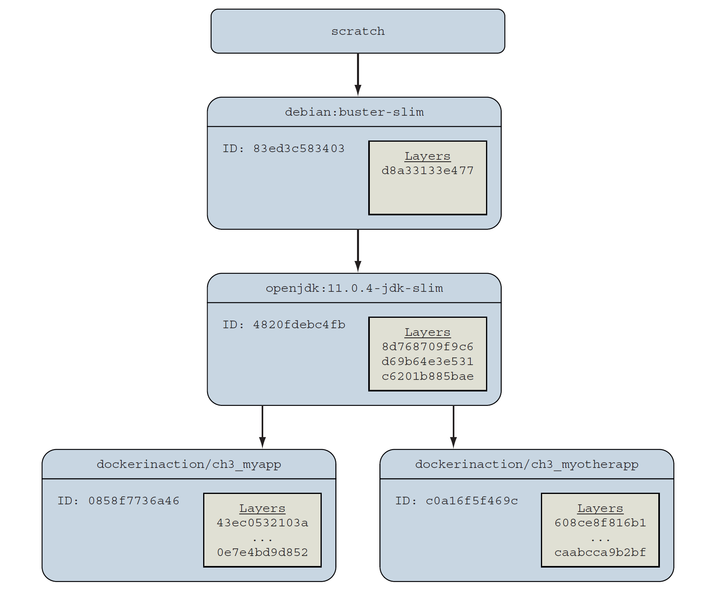
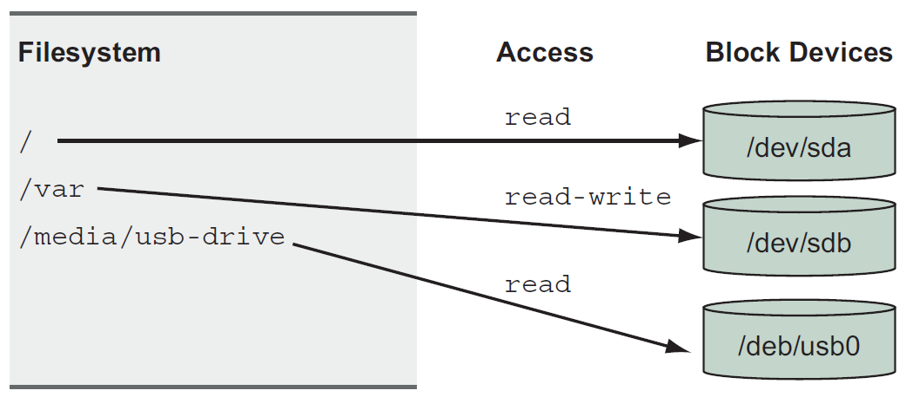
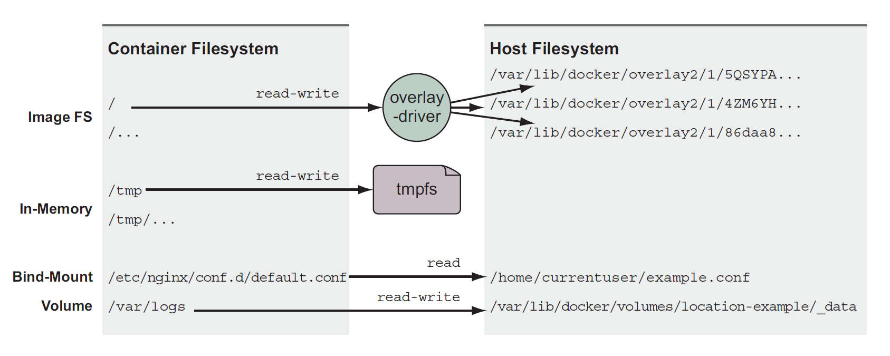
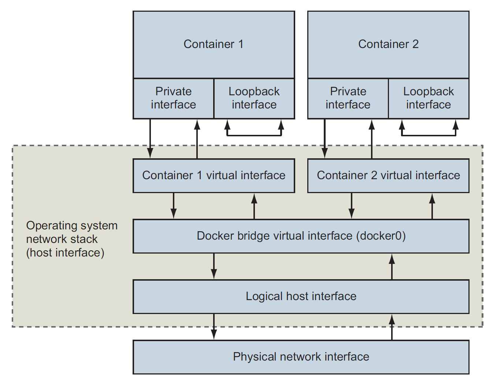
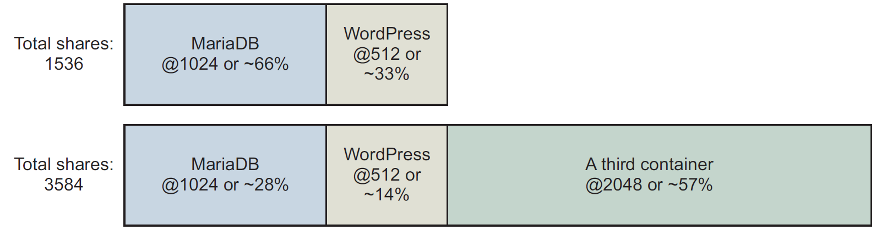

⚙️ Process isolation & Environment-independent computing
⚙️ Process isolation & Environment-independent computingRunning software in containersOperations on containersPID namespaceEliminating metaconflictsCIDsContainer state and dependenciesEnvironment variable injectionBuilding durable containersUsing PID 1 and init systemsSoftware installation simplifiedInstallation files and isolationLayers relationshipsContainer filesystem abstraction and isolationMNT namespaceschrootWorking with storage and volumesFile trees and mount pointsBind mountsIn-memory storageDocker volumesSingle-host networkingBuilding and exploring networkHandling inbound traffic with NodePort publishingContainer network caveats and customizationsNo firewalls or network policiesCustom DNS configurationLimiting risk with resource controlsSetting resource allowancesMemory limitsCPUAccess to devicesSharing memoryUsersUsers and volumesLinux user (USR) namespaceAdjusting OS feature access with capabilitiesRunning a container with full privileges
Running software in containers
An example of running a container:
x
docker run --detach \--name web nginx:latest--detach(-d) means that the container will run in the background, without being attached to any input or output stream- Detached type of program is called a daemon or a service. A daemon generally interacts over a network or other channels
An example of running interactive container such as terminal-based text editor:
x
docker run --interactive --tty \--link web:web \--name web_test \busybox:1.29 /bin/sh--interactive(-i) tells Docker to keep the standard input stream (stdin) open for the container--ttyoption tells Docker to allocate a virtual terminal for the container, which will allow to pass signals to the container- At the end we specified to run a shell program
sh
It's possible to create an interactive container, start a process inside of it and then detach the terminal by holding down the CTRL + P + Q. Works only with
--ttyoption.
Command
-itcreates a virtual terminal and binds stdin.
Operations on containers
Which containers are currently running:
x
docker psIt will show id, used image, command executed in the container, timestamp, duration, exposed network ports and container name.
Check logs for a container:
x
docker logs web PID namespace
A PID namespace is a set of unique number that identify processes. Linux provides tools to create multiple PID namespaces. A container's PID namespace isolates processes in that container from other processes in other containers.
Check container PID's:
x
docker exec namespaceA psIf we'll check the second container PID's the result will differ because each container has it's own isolated list of processes.
docker run --pid host busybox:1.29 psshould list all processes running on the computer. Useful when performing a system administration task.
Eliminating metaconflicts
Conflicts between containers in the Docker layer is called metaconflicts. For example it can be conflict in names. We resolve it with the docker rename command.
CIDs
We can write container ID to a CID file using --cidfile when docker create (create container but not start) or docker run:
x
docker create --cidfile /tmp/web.cid nginxThe reason to use CID files instead of names is that CID files can be shared with containers easily.
To avoid name conflicts we create folders such as /containers/web/customer1/web.cid or /containers/web/customer8/web.cid.
An example script with assigning CIDs to variables:
x
MAILER_CID=$(docker run -d dockerinaction/ch2_mailer)
WEB_CID=$(docker run -d nginx)
AGENT_CID=$(docker run -d \ --link $WEB_CID:insideweb \ --link $MAILER_CID:insidemailer \ dockerinaction/ch2_agent)
Container state and dependencies

To see all the containers (including those in created state) use docker ps -a.
Environment variable injection
Key/value pairs that let us change a program's configuration without modifying any files or changing the command used to start the program:
x
docker run --env MY_ENVIRONMENT_VAR="this is a test" \busybox:1.29 \env
Building durable containers
Using the --restart flag at container-creation time we can set next actions:
- never restart (default)
- attempt to restart when a failure is detected
- attempt for some predetermined time to restart when a failure
- always restart the container regardless of the condition
Docker doesn't always attempt to immediately restart a container. A backoff strategy is used so at first time restarting Docker waits 1 second, then on the second attempt wait 2 seconds, 4 seconds and so on.
Using PID 1 and init systems
An init system is a program that's used to launch and maintain the state of other programs. Any process with PID 1 is treated like an init process. There are several init systems that could be used inside a container such as runit, supervisors, tini and other.
Which processes are running inside a container:
xdocker top container_name
Software installation simplified
The three main ways to install Docker images:
Using Docker registries
Using image files with
docker saveanddocker loadBuilding images with Dockerfiles
x
git clone https://github.com/dockerinaction/ch3_dockerfile.gitdocker build -t dia_ch3/dockerfile:latest ch3_dockerfile-toption value provides the repository where to install the image.
Installation files and isolation
Most of the time an image is actually a collection of image layers. A layer is set of files and file metadata that is packaged and distributed as an atomic unit. Docker treats each layer like an image, and layers are often called intermediate images.
If you specify the -a flag in the docker images command, the list will include every installed intermediate image or layer. Some can be listed as <none> - unnamed images that in process of building weren't tagged.
Layers relationships

Container filesystem abstraction and isolation
Programs running inside containers know nothing about image layers. From inside a container, the filesystem operates as though it's not running in a container. From the perspective of the container, it has exclusive copies of the files provided by the image. It's called union filesystem (UFS).
A union filesystem is part of a critical set of tools that combine to create effective filesystem isolation. The other tools are MNT namespaces and the chroot system call.
MNT namespaces
Linux namespaces are a feature that partitions kernel resources such that one set of processes sees one set of resources while another set of processes sees a different set of resources. The feature works like that:
- many namespaces for a set of resources and processes
- namespaces refer to distinct resources
A Linux system starts out with a single namespace of each type, used by all processes. Processes can create additional namespaces and join different namespaces.
Mount namespaces (MNT) is one of those types, which control mount points (mount point is simply a directory, that is created as part of the root filesystem, for example the home filesystem is mounted on the directory/home; the Linux root filesystem is mounted on the root directory (/) very early in the boot sequence). When creating mount from the current one, the namespace is copied to the new one, and those mount points do not propagate between namespaces.
chroot
It's used to make the root of the image filesystem the root in the container's context. This prevents anything running inside the container form referencing any other part of the host filesystem.
Working with storage and volumes
File trees and mount points
Linux unifies all storage into a single tree. Storage devices such as disk partition or USB disk partitions are attached to specific locations in that tree. Those locations are called mount points.

A mount point defines the location in the tree, the access properties to the data at that point, and the source of the data mounted at that point.
Every container has something called a MNT namespace and a unique file tree root. We can also mount nonimage-related storage at other points. That's how containers get access to storage on the host filesystem and share storage between containers.
There are 3 types of storage mounted into containers:
- Bind mounts
- In-memory storage
- Docker volumes

All 3 types can be created using the --mount flag.
Bind mounts
Bind mounts are mount points used to remount parts of a filesystem tree onto other locations (a user-specific location on the host to a specific point in a container file tree):
x
LOG_SRC=~/example.log; \LOG_DST=/var/log/nginx/custom.host.access.log; \docker run -d --name diaweb \ --mount type=bind,src=${CONF_SRC},dst=${CONF_DST},readonly=true \ --mount type=bind,src=${LOG_SRC},dst=${LOG_DST} \ -p 80:80 \ nginx:latestIn-memory storage
We can add in-memory storage to containers with a special type of mount to have our private keys there, database passwords and other sensitive information:
x
docker run --rm \ --mount type=tmpfs,dst=/tmp \ --entrypoint mount \ alpine:latest -vThis command creates an empty tmpfs device and attaches it to the new container's file tree at /tmp. Any files created under this file tree will be written to memory instead of disk. This mount point is created with sensible default configuration:
x
tmpfs on /tmp type tmpfs (rw,nosuid,nodev,noexec,relatime)Docker volumes
Docker volumes are named filesystem trees managed by Docker. They can be implemented with disk storage on the host filesystem or in cloud:
x
docker volume create \ --driver local \ --label example=cassandra \ cass-shared docker run -d \ --volume cass-shared:/var/lib/cassandra/data \ --name cass1 \ cassandra:2.2First command creates volume named cass-shared and second mounts the volume into the container.
The docker run command provides a flag, --volumes-from, that will copy the mount definitions from one or more containers to the new container.
Single-host networking
The default local Docker network topology and 2 attached containers:

Each container is assigned a unique private IP address that's not directly reachable from the external network. Connections are routed through another Docker network that routes traffic between container and may connect to the host's network to form a bridge.
If we run docker network ls it displays a list of all the networks. By default, Docker includes 3 networks:
bridgeis the default network and provided by abridgedriverhostis provided by thehostdriver, which instructs Docker not to create any special networking namespace for attached containersnoneuses thenulldriver, containers attached to this network won't have any network connectivity outside themselves.
The scope of a network can take 3 values:
local: the network is constrained to the machine where the network existsglobal: should be created on every node in a cluster but not route between themswarm: spams all of the hosts participating in a Docker swarm (multi-host or cluster-wide)
Building and exploring network
x
docker network create \ --driver bridge \ --label project=dockerinaction \ --label chapter=5 \ --attachable \ --scope local \ --subnet 10.0.42.0/24 \ --ip-range 10.0.42.128/25 \ user-network- Marking as
attachableallows to attach and detach containers to the network at any time - A custom subnet and assignable address range was defined; as we add containers to this network, they will receive IP addresses in the range from 10.0.42.128 to 10.0.42.255
Attach a new container to that network:
x
docker run -it \ --network user-network \ --name network-explorer \ alpine:3.8 \ shGet a list of the IPv4 addresses available in the container:
x
ip -f inet -4 -o addrThe result will show 2 network devices: loopback interface and a virtual Ethernet device, which is connected to bridge.
Handling inbound traffic with NodePort publishing
To forward traffic from the external network interfaces we need to specify a TCP or UDP port on the host interface and a target container and container port.
Port publication configuration is provided at container creation time with a -p or --publish list option. That argument specifies the host interface, the port on the host to forward, the target port, and the port protocol:
0.0.0.0:8080:8080/tcp8080:8080is the same
Both option will forward TCP port 8080 from all host interfaces to TCP port 8080 in the new container.
If we specify as
-p 8080then it will select a random host port, and traffic will be routed to port 8080 in the container. The benefit is that ports are scarce resources and it allows to avoid potential conflicts.
See the ports forwarded to any given container:
x
docker port listener
Container network caveats and customizations
No firewalls or network policies
Docker container networks do not provide any access control or firewall mechanisms between containers. We need to secure containers with appropriate application-level access-control mechanisms because containers on the same container network will have bidirectional unrestricted network access.
Custom DNS configuration
Docker provides different options for customizing the DNS configuration for a new container.
The docker run command has a --hostname flag to set the hostname of a new container. This flag adds an entry to the DNS override system inside the container.
Setting the hostname is useful when programs running inside a container need to look up their own IP address. To share those hostnames with other containers we need to use an external DNS server.
We can also specify a DNS server to use (for example to Google's public DNS server):
x
docker run --rm \ --dns 8.8.8.8 \ alpine:3.8 \ nslookup docker.com
Limiting risk with resource controls
Setting resource allowances
By default, Docker containers may use unlimited CPU, memory, and device I/O resources. We can set those parameters in docker create or run commands.
Memory limits
Set a limit memory:
x
docker container run -d --name ch6_mariadb \ --memory 256m \ --cpu-shares 1024 \ --cap-drop net_raw \ -e MYSQL_ROOT_PASSWORD=test \ mariadb:5.5CPU
--cpu-shares sets the CPU shares and establish its relative weight.

If we set relative weight for MariaDB to 1024 and WordPress to 512 then the first container gets two CPU cycles for every one for other container cycle.
--cpus limits the total amount of CPU used by container:
x
docker container run -d -P --name ch6_wordpress \ --cpus 0.75 \ wordpress:5.0.0-php7.2-apacheWith --cpuset-cpus we limit a container to execute only on a specific set of CPU cores.
Access to devices
x
docker container run -it --rm \ --device /dev/video0:/dev/video0 \ ubuntu:16.04 ls -al /dev
Sharing memory
If we need to run programs that communicate with shared memory in different containers, then we'll need to join their IPC namespaces with the --ipc flag:
x
docker container rm -v ch6_ipc_consumer
docker container run -d --name ch6_ipc_consumer \ --ipc container:ch6_ipc_producer \ dockerinaction/ch6_ipc -consumerOn the example the consumer should be able to access the same memory location where the server is writing.
Sharing memory between containers is a safer alternative than sharing memory with the host (
--ipc=host).
Users
Docker starts containers as the user that is specified by the image metadata by default. To inspect image metadata use docker inspect command. Show the run-as user defined in the image:
x
docker inspect --format "{{.Config.User}}" busybox:1.29Get a list of available users in an image:
x
docker container run --rm busybox:1.29 awk -F: '$0=$1' /etc/passwdWe specify a run-as-user with the --user or -u command on docker container run and create. The value can accept any user (name or UID) or group pair.
Users and volumes
File permissions on files in volumes are respected inside the container and the user ID space is shared. It means that both root on the host and root in the container have user ID 0 and they can access a root file.
Linux user (USR) namespace
It maps users in one namespace to users in another. The mappings determine how user IDs on the host correspond to user IDs in a container namespace. For example we map all host UIDs starting from 0 to container UIDs starting with 5000 and a range of 1000. The result is that UID 0 on host is UID 5000 in a container which means that root privileges' were gone.
By default, Docker containers are not using this feature.
Adjusting OS feature access with capabilities
Docker can adjust a container's authorization to use individual operating system features (capabilities). When a container starts there are list of capabilities that are necessary and safe to run most applications. Using the --cap-drop flag we may drop some of them:
x
docker container run --rm -u nobody \ --cap-drop net_raw \ ubuntu:16.04 \ /bin/bash -c "capsh --print | grep net_raw"Add capabilities with the --cap-add flag.
Running a container with full privileges
x
docker container run --rm \ --privileged \ ubuntu:16.04 ls /devUse it to run a privileged container in which we change something on a host that needs root privileges'.